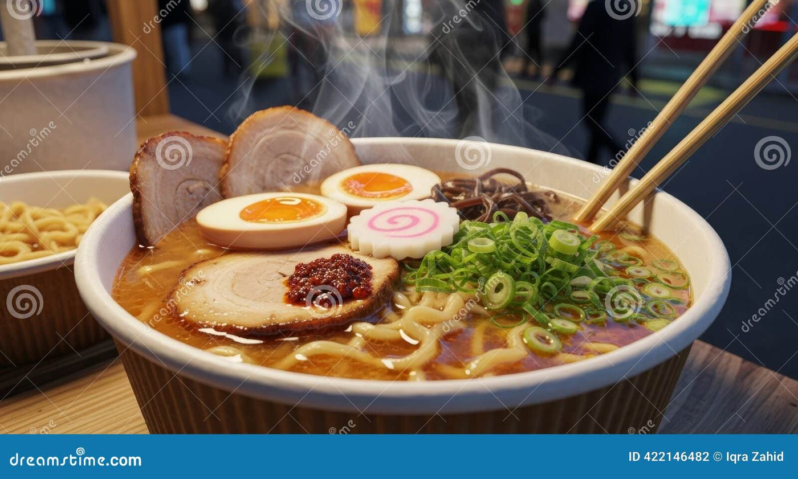
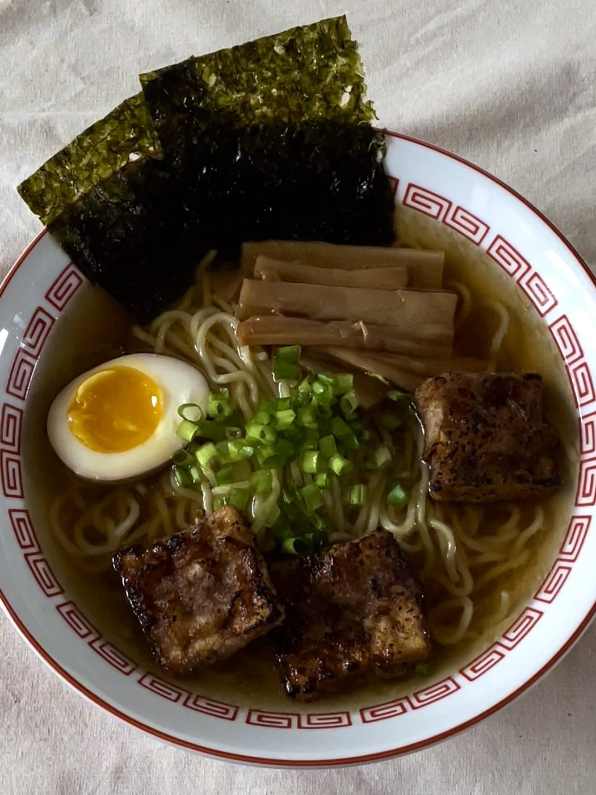
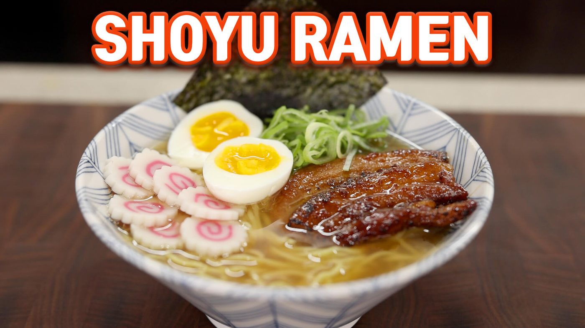
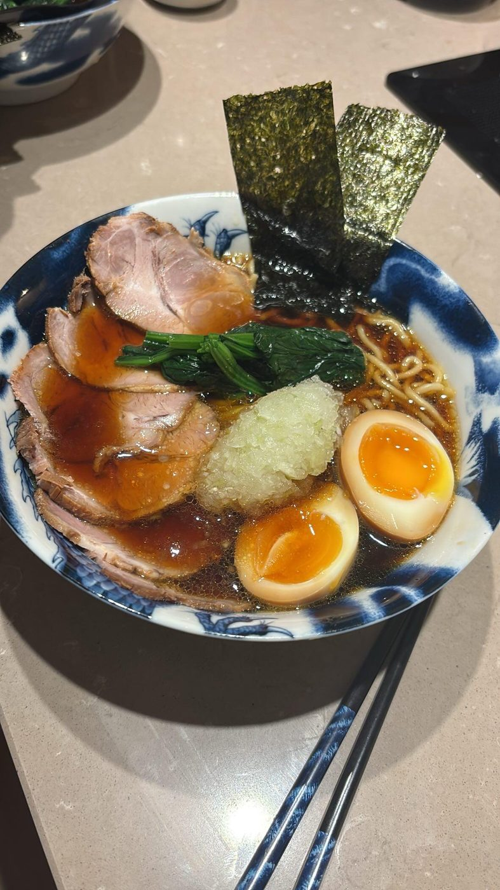
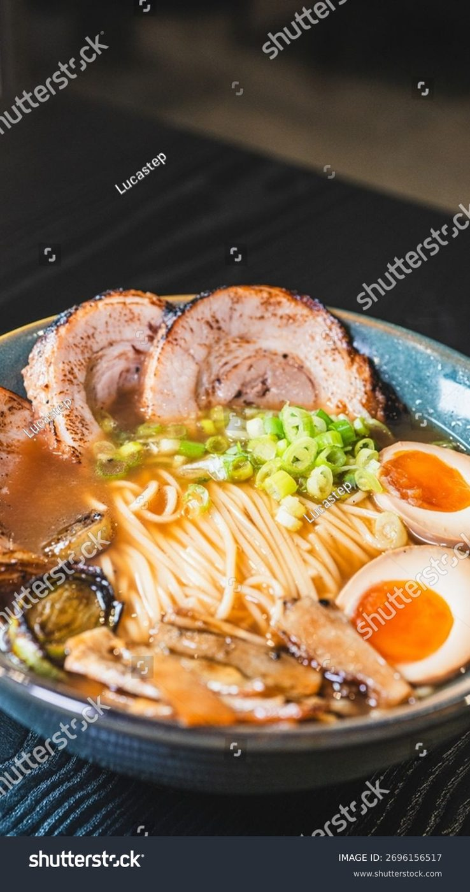
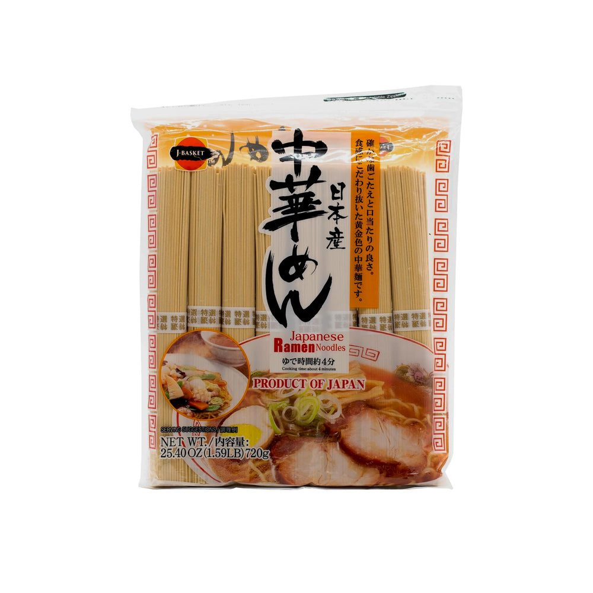
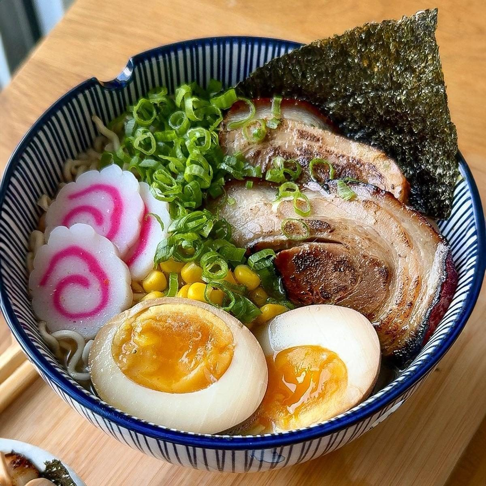

← Asian Kitchen
Shoyu Ramen
Clear chicken-soy broth, jammy eggs, springy noodles — the Tokyo classic, built from scratch.
Clear chicken-soy broth, jammy eggs, springy noodles — the Tokyo classic, built from scratch.
Shoyu ramen is the original ramen — the Tokyo standard, soy-sauce seasoned, clear rather than milky, built on a broth of chicken (often with vegetables) that tastes clean and deeply savory rather than heavy. Where tonkotsu shouts, shoyu speaks at a normal volume and somehow holds the whole room.
The bowl is assembled in layers, and that is the real lesson of making ramen at home: broth, tare (the seasoning base), aroma oil, noodles, toppings — each one seasoned on its own merit. A soft egg marinated overnight. Chashu pork braised and torched. Scallions cut fine. None of it is hard; all of it adds up to something much larger than a noodle soup has any right to be.
serves 4 — tick items off as you shop; it saves as you go
Every tool this recipe leans on — click any tool for its full story. The whole catalog lives on the Tool Wall.
the broth is built in layers here
strain before the tare goes in
warms the tare and the toppings
noodles get their own water - never the broth's
Broil onion, scallion, ginger and garlic until blackened at the edges. Charred, not burned — this builds the broth's backbone without clouding it.
Cover chicken and aromatics with 3 L cold water. Bring to a bare simmer — bubbles occasionally breaking the surface, never a boil — and cook 3 hours, skimming. Boiling emulsifies fat into milky cloudiness; you want clarity.
Combine soy sauce, mirin and 120 ml of the finished broth in a small saucepan; warm through. This concentrated seasoning goes into the bowl first — never season the whole pot.
Boil eggs exactly 6.5 minutes from fridge-cold, ice bath, peel, marinate overnight in equal soy and mirin thinned with a splash of water. Slice chashu thin; torch or sear the edges until they smell like a festival.
Cook fresh noodles in unsalted boiling water 60-90 seconds — fresh ramen cooks in the time it takes to breathe. Drain well. Meanwhile heat the bowls with hot water.
Per bowl: 40 ml tare, 400 ml hot broth, a teaspoon of sesame oil. Add noodles, lift them once with chopsticks to fold. Top with pork, egg halves, scallions, nori. Eat immediately, loudly, with unembarrassed slurping.







Images are web-sourced via image search and self-hosted. Original sources:
https://z-cdn.chatglm.cn/image-search-mcp/images-ppt/193c30a34da7.jpghttps://z-cdn.chatglm.cn/image-search-mcp/images-ppt/37283b11f8b8.jpghttps://z-cdn.chatglm.cn/image-search-mcp/images-ppt/3ba977cb5770.webphttps://z-cdn.chatglm.cn/image-search-mcp/images-ppt/63c521951136.jpghttps://z-cdn.chatglm.cn/image-search-mcp/images-ppt/a27a6c73f538.jpeghttps://z-cdn.chatglm.cn/image-search-mcp/images-ppt/c5c7883d9321.jpghttps://z-cdn.chatglm.cn/image-search-mcp/images-ppt/f81449f57ac7.jpgVerified working videos — click a card to load the embed.


The dish at a glance — twelve field notes for the collectors.
Powered by GitHub Issues — the backup kitchen. One issue per recipe; your comment lands in the repo.
Three answers to one question. Tokyo says soy and wheat; Hanoi says clarity and rice; your grandmother says chicken.


If this one works for you, the neighbors probably will too.

deep brown broths, opposite roads: charred layers vs slow caramel